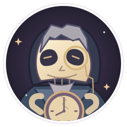

TOUGAIGU 的第二个夜晚 VOL. 02
给明天的一封信
掀起你的
头盖骨✧
头顶掀开一点，世界就会亮一点。
一位忘记过去的小骷髅，一团住在头顶的光。
穿过六个奇妙的夜晚，把没说出口的话，
送到终于愿意天亮的地方。
06 幕完整故事12 盏文化谜灯 身体 × 拾光
✧✦
“脑洞，真的可以打开。”—— 阿拾，今晚第一次掀盖

寄往：明天收件人：正在继续生活的你POSTAGE
PAID IN
COURAGE
KEEP
YOUR LIGHT✦
头盖骨下面藏着的，不只是脑洞。
还有一团光，和一个还没抵达的明天。
SIX NIGHTS. ONE TOMORROW.
沿着灯，把故事走完。
每一站都有两盏谜灯、三片记忆。失败会回到检查点，勇气不会清零。 章节进度自动保存在此浏览器
A DIFFERENT KIND OF HEADSPACE
有些路，换个自己走。
01 / 留下身体
脚踏实地，脑洞起飞。
阿拾会走、会跳，也能站住机关。掀开头盖骨，拾光就能飞向身体到不了的地方。
02 / 穿过回声
把一束光，送进秘密里。
沿着光点寻找回声灯，用脉冲唤醒机关。别飞得太远；身体，一直在原处等你。
03 / 解开谜灯月日明
诗里有路，谜底有光。
诗词、灯谜、歇后语，藏在一封封来信里。想不起来也没关系，拾光会慢慢提示你。
PEOPLE YOU'LL CARRY WITH YOU
夜里遇见的人，也有自己的灯。

第 拾 号邮差阿拾与拾光
忘记了很多事，却还记得：
答应送出的信，要送到。

永远的夜班检票员绒绒
嘴上催你赶车，
总会替你留到最后一班。

不肯让明天到来的守钟人归先生
如果停住钟，
能不能多等一个人一会儿？
YOUR POCKET FULL OF YESTERDAYS捡回来的，不止是记忆。
18 片残页、6 件纪念物，还有你在故事里留下的选择。